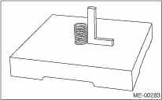

1. Make sure there are no cracks or other damage. In addition to visual inspection, inspect important areas using liquid penetrant tester.
Also make sure the gasket installing surface shows no trace of gas and water leaks.
2. Place the cylinder head on the ST.
| ST 498267800 | CYLINDER HEAD TABLE |
3. Measure the warping of the cylinder head surface that mates with crankcase using a straight edge and thickness gauge.
If the warping exceeds the limit, regrind the surface with a surface grinder.
Warping limit:
0.035 mm (0.0012 in)
Grinding limit:
0.1 mm (0.004 in)
Standard height of cylinder head:
97.5 mm (3.839 in)
NOTE:
Uneven torque for the cylinder head bolts can cause warping. When reassembling, pay special attention to the torque so as to tighten evenly.
|
(A) |
Straight edge |
|
(B) |
Thickness gauge |
Inspect the intake and exhaust valve seats, and correct the contact surfaces with a valve seat cutter if they are defective or when valve guides are replaced.
Valve seat width W:
Intake (A)
Standard value: 0.8 — 1.4 mm (0.03 — 0.055 in)
Limit: 1.7 mm (0.067 in)
Exhaust (B)
Standard value: 1.2 — 1.8 mm (0.047 — 0.071 in)
Limit: 2.2 mm (0.087 in)
1. Check the clearance between valve guide and stem. The clearance can be checked by measuring the outer diameters of each valve stem and the inner diameters of valve guides with a micrometer.
Clearance between the valve guide and valve stem:
Standard
Intake: 0.035 — 0.062 mm (0.0014 — 0.0024 in)
Exhaust: 0.040 — 0.067 mm (0.0016 — 0.0026 in)
Limit
0.15 mm (0.0059 in)
|
(A) |
Valve guide |
2. If the clearance between valve guide and stem exceeds the limit, replace the valve guide or valve itself whichever shows greater amount of wear. See the following procedure for valve guide replacement.
Valve guide inner diameter:
6.000 — 6.012 mm (0.2362 — 0.2367 in)
Valve stem outer diameters:
Intake
5.950 — 5.965 mm (0.2343 — 0.2348 in)
Exhaust
5.945 — 5.960 mm (0.2341 — 0.2346 in)
(1) Place the cylinder head on ST1 with the combustion chamber upward so that valve guides fit the holes in ST1.
(2) Insert the ST2 into valve guide and press it down to remove the valve guide.
| ST1 498267800 | CYLINDER HEAD TABLE |
| ST2 499767200 | VALVE GUIDE REMOVER |
(3) Turn the cylinder head upside down and place the ST as shown in the figure.
| Intake side |
| ST 499767700 | VALVE GUIDE ADJUSTER |
| Exhaust side |
| ST 499767800 | VALVE GUIDE ADJUSTER |
|
(A) |
Valve guide |
(4) Before installing a new valve guide, make sure that neither scratches nor damages exist on the inner surface of valve guide holes in cylinder head.
(5) Put a new valve guide, coated with sufficient oil, in cylinder, and insert the ST1 into valve guide. Press in until the valve guide upper end is flush with the upper surface of ST2.
| ST1 499767200 | VALVE GUIDE REMOVER |
| Intake side |
| ST2 499767700 | VALVE GUIDE ADJUSTER |
| Exhaust side |
| ST2 499767800 | VALVE GUIDE ADJUSTER |
(6) Check the valve guide protrusion.
Valve guide protrusion L:
Intake
20.0 — 21.0 mm (0.787 — 0.827 in)
Exhaust
16.5 — 17.5 mm (0.650 — 0.689 in)
|
(A) |
Valve guide |
(7) Ream the inside of valve guide using ST. Put the reamer in valve guide, and rotate the reamer slowly clockwise while pushing it lightly. Bring the reamer back while rotating it clockwise. After reaming, clean the valve guide to remove chips.
NOTE:
• Apply engine oil to the reamer when reaming.
• If the inner surface of valve guide is damaged, the edge of reamer should be slightly ground with oil stone.
• If the inner surface of valve guide becomes lustrous and the reamer does not chip, use a new reamer or remedy the reamer.
| ST 499767400 | VALVE GUIDE REAMER |
(8) Recheck the contact condition between valve and valve seat after replacing the valve guide.
1. Inspect the flange and stem of the valve, and replace if damaged, worn, or deformed, or if H is outside of the specified limit.
H:
Intake
Standard value: 0.8 — 1.2 mm (0.03 — 0.047 in)
Limit: 0.6 mm (0.024 in)
Exhaust
Standard value: 1.0 — 1.4 mm (0.039 — 0.055 in)
Limit: 0.6 mm (0.024 in)
Valve overall length:
Intake
120.6 mm (4.75 in)
Exhaust
121.7 mm (4.79 in)
2. Put a small amount of grinding compound on the seat surface, and lap the valve and seat surface.  Install a new valve oil seal after lapping.
Install a new valve oil seal after lapping.
NOTE:
It is possible to differentiate between the intake valve and the exhaust valve by their overall length.
1. Check the valve springs for damage, free length, and tension. Replace the valve spring if it is not within the standard value presented in the table.
2. To measure the squareness of the valve spring, stand the spring on a surface plate and measure its deflection at the top of spring using a try square.
|
Free length |
mm (in) |
54.30 (2.1378) | |
|
Tension/spring height |
N (kgf, lbf)/mm (in) |
Set |
214 — 246 (22 — 25, 48 — 55)/45.0 (1.772) |
|
Lift |
526 — 582 (54 — 59, 119 — 130)/34.7 (1.366) | ||
|
Squareness |
2.5°, 2.4 mm (0.094 in) or less | ||

6. INTAKE AND EXHAUST VALVE OIL SEAL
For the following, remove an oil seal from valve guide and replace it with a new part.
• When the lip is damaged.
• When the spring is out of the specified position.
• When readjusting the surfaces of intake valve and valve sheet.
• When replacing the intake valve guide.
1. Place the cylinder head on ST1.
2. Using the ST2, press-fit the oil seal.
NOTE:
• Apply engine oil to oil seal before press-fitting.
• When press-fitting the oil seal, do not use a hammer or strike in.
• Differentiate between the intake valve oil seal and exhaust valve oil seal by noting their difference in color.
| ST1 498267800 | CYLINDER HEAD TABLE |
| ST2 498857100 | VALVE OIL SEAL GUIDE |
Color of rubber part:
Intake [Gray]
Exhaust [Green]